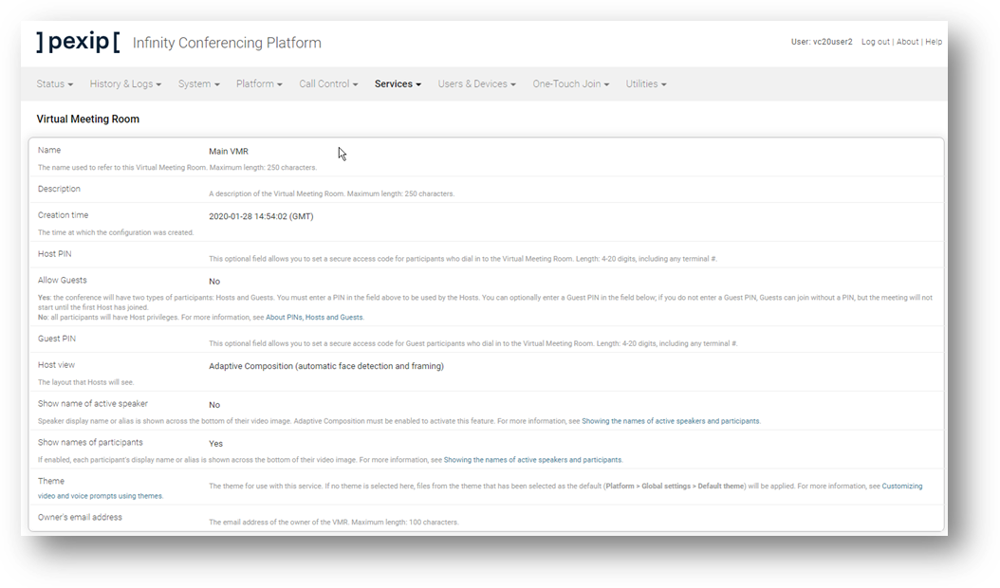

Suggested completion time: 30 minutes
Use section #2 and section #9 of the lab sheet.
To configure LDAP Authentication:
Setup the LDAP server connection:
- Go to Users & Devices --> Administrator Authentication.
- Authentication source: LDAP database and local database.
- Require client certificate: Not required.
- Set the LDAP server address.
- Leave Allow insecure transport unchecked (we like security, and we have just added some trusted TLS certs 😉).
- Set the LDAP bind username.
NOTE: LDAP can be difficult. The bind username should be in the format LDAPServiceAccount@pexipacademy.local. If this fails, try the format pexipacademy\LDAPServiceAccount.
- Set the LDAP bind password.
- Set the LDAP base DN.
- In the Advanced LDAP configuration panel, set the LDAP user search DN to filter user searching starting from a specific Organisational Unit.
- In the Advanced LDAP configuration panel, set the LDAP group search DN to filter secuity group searching starting from a specific Organisational Unit.
- Click Save.
Check the LDAP authentication roles (no need to edit):
- Go to Users & Devices --> Administrator Roles.
- Two common roles are already defined by default, read-only and read-write.
NOTE: You do not need to change anything here but could add different roles to allow more granular permissions.
Setup the LDAP role mapping against an AD group:
- Go to Users & Devices --> LDAP Role Mappings.
- Configure two role mappings (using names like Read/Write Admins, and Read Only Admins).
- Select the correct LDAP group DN from the filtered list for each mapping.
- Select the role to map for each mapping (there are two default administrator roles you can use, "Read-write", and "Read-only").
- Save.
Testing
When you have configured the LDAP authentication, it's time to test these privileges. First, log out from the admin account, then log in as each AD user outlined in section #9. Ensure you do NOT use the domain part in the user name. Next, check your environment against our screenshots (see below).
Checking your LDAP configuration
A screenshot of the LDAP Role Mappings:

Screenshots showing the different users logged in:


A screenshot showing that the logged-in user has read-only privileges:
Note that this user (vc20user2) is unable to edit the properties of the VMR service.
